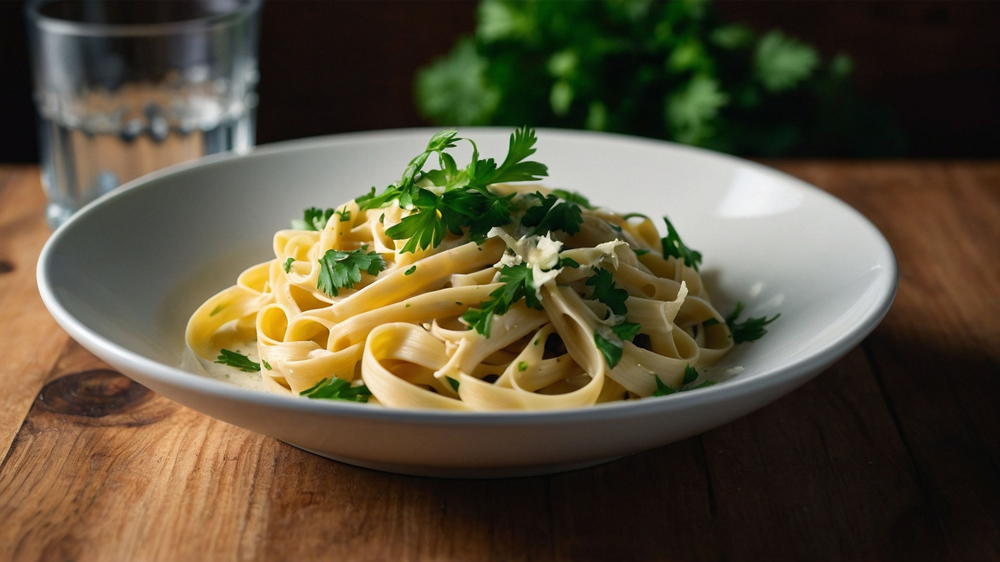

Home
Classic Chicken Alfredo

Description
This Classic Chicken Alfredo is a rich and creamy pasta dish that's surprisingly easy to make.
Tender pieces of chicken are tossed with fettuccine in a luxurious, Parmesan-infused cream sauce,
making it a perfect weeknight meal or a comforting dish for guests. It's a true crowd-pleaser that comes together quickly.
Ingredients
For the Chicken:
- 2 boneless, skinless chicken breasts (about 300-400g total), cut into 1-inch pieces
- 1 tablespoon olive oil
- 1/2 teaspoon garlic powder
- 1/2 teaspoon onion powder
- Salt and freshly ground black pepper to taste
For the Fettuccine:
- 300g fettuccine pasta
- Salt for boiling water
For the Alfredo Sauce:
- 4 tablespoons (56g) unsalted butter
- 2 cloves garlic, minced
- 1 1/2 cups heavy cream
- 1 cup (about 100g) grated Parmesan cheese, plus more for serving
- Salt and freshly ground black pepper to taste
- Fresh parsley, chopped, for garnish (optional)
Steps
-
Cook the Chicken:
- Heat olive oil in a large skillet over medium-high heat.
- Season the cut chicken pieces with garlic powder, onion powder, salt, and pepper.
- Add chicken to the hot skillet and cook for 5-7 minutes, stirring occasionally, until it's golden brown and cooked through.
- Remove chicken from the skillet and set aside.
-
Cook the Fettuccine:
- Bring a large pot of salted water to a rolling boil.
- Add the fettuccine pasta and cook according to package directions until al dente (firm to the bite).
- Before draining, reserve about 1/2 cup of the pasta cooking water.
- Drain the pasta and set aside.
-
Make the Alfredo Sauce:
- In the same skillet (or a clean saucepan), melt the butter over medium heat.
- Add minced garlic and sauté for about 1 minute until fragrant (do not brown).
- Pour in the heavy cream and bring it to a gentle simmer, stirring frequently. Do not boil vigorously.
- Reduce heat to low and gradually whisk in the grated Parmesan cheese until smooth and melted.
- Season the sauce with salt and black pepper to taste. If the sauce is too thick, add a tablespoon or two of the reserved pasta water to reach your desired consistency.
-
Combine and Serve:
- Add the cooked fettuccine and cooked chicken to the Alfredo sauce.
- Toss gently until everything is well coated.
- Serve immediately, garnished with fresh chopped parsley and extra grated Parmesan cheese, if desired.